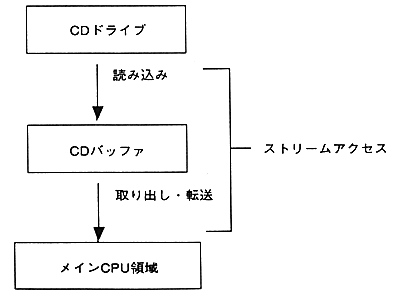

Terminology | Meaning |
|---|---|
Stream | Flow of logically continuous data |
Stream key | Key to read stream into CD buffer. It consists of frame |
Stream group | A collection of multiple streams. |
final stream | The stream that is regenerated last in the stream group. |
Loop start stream | Return |
Number of loops | Number of times the |
Transfer start FAD | Pickup that starts transferring data read into the CD buffer to a buffer in the program Position of. |
Transfer gate | Gate used to transfer the data read into the CD buffer to the |
